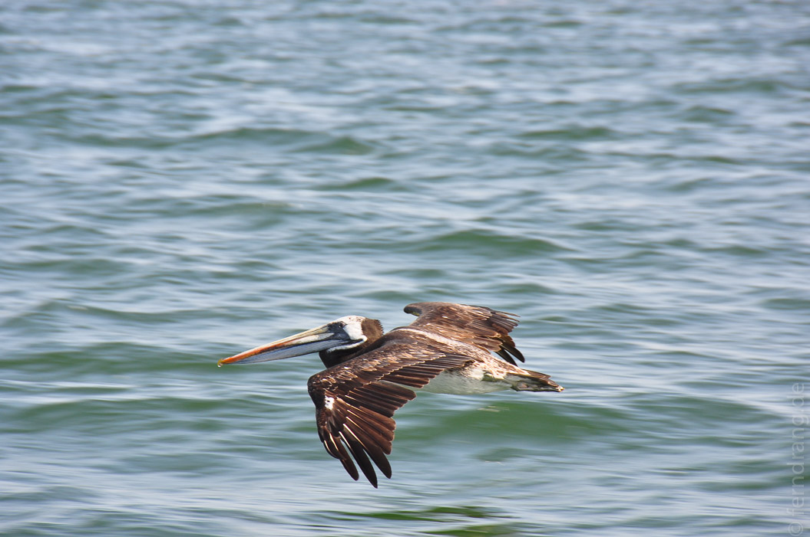
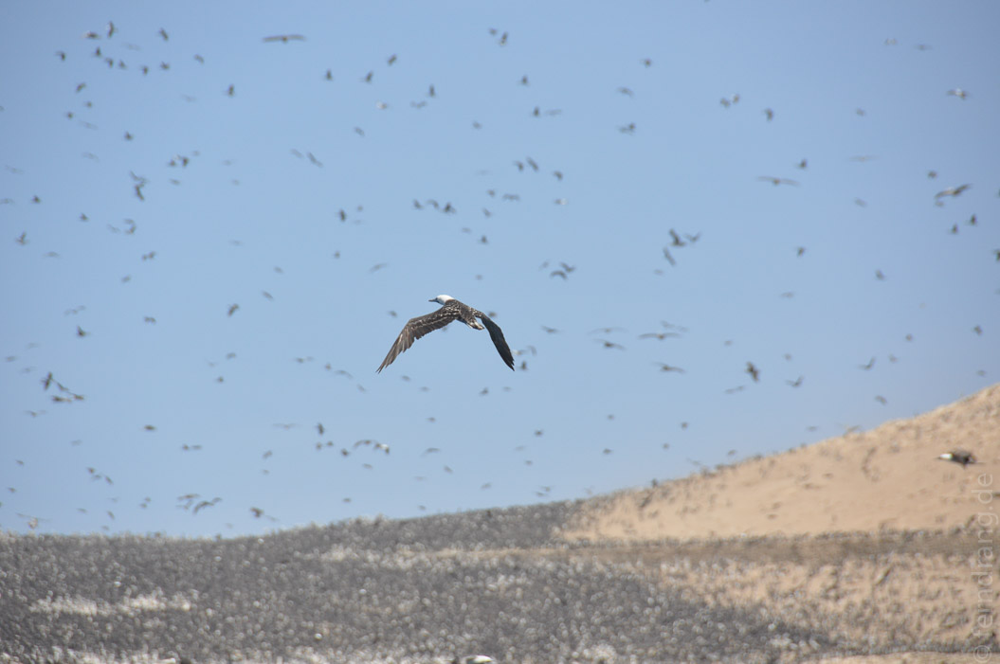
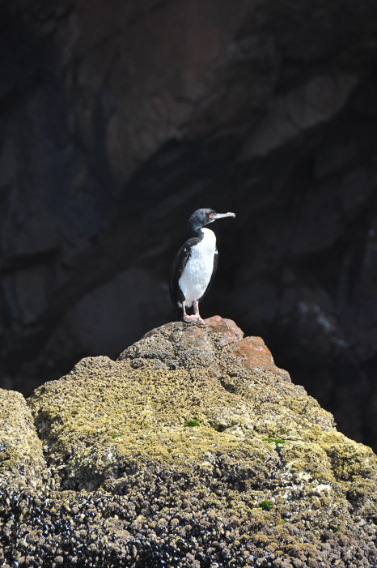
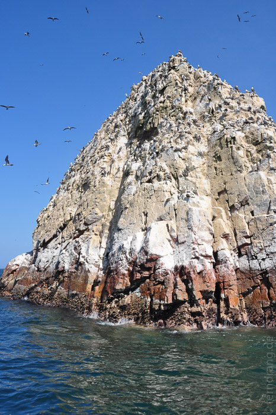
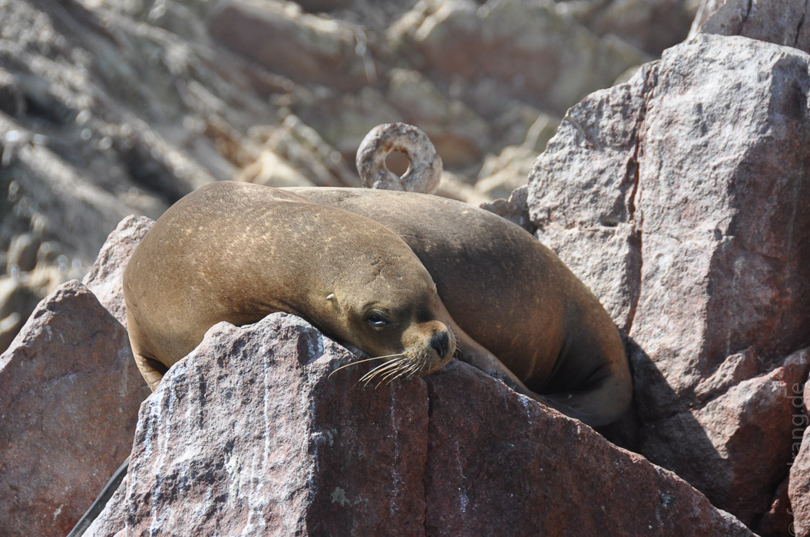
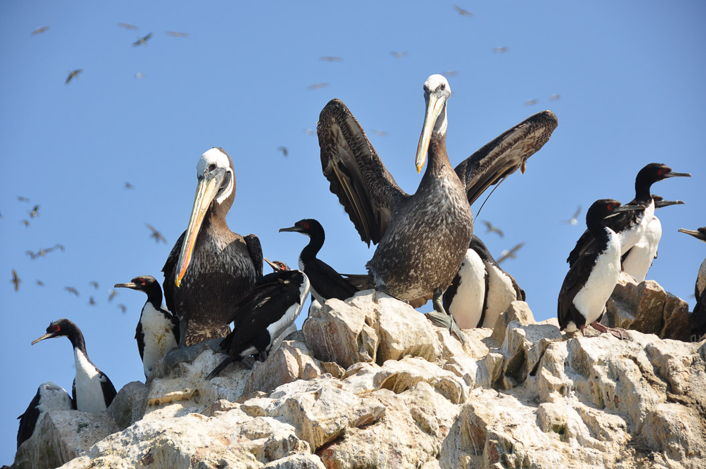
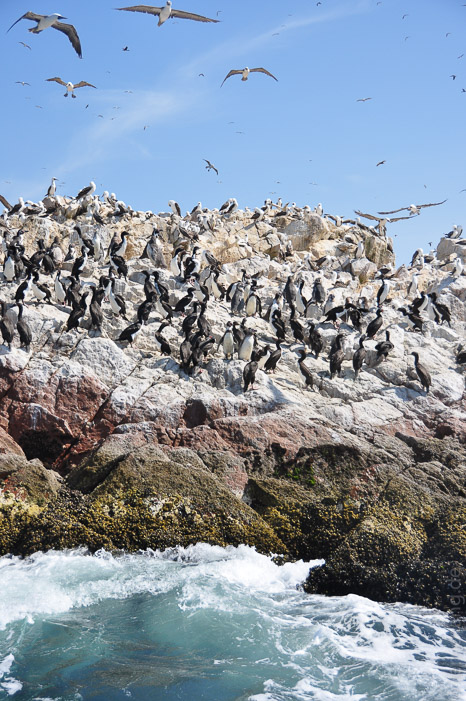
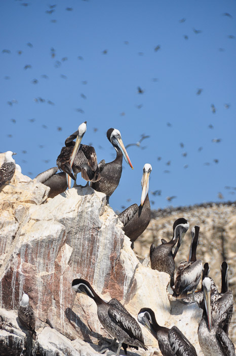
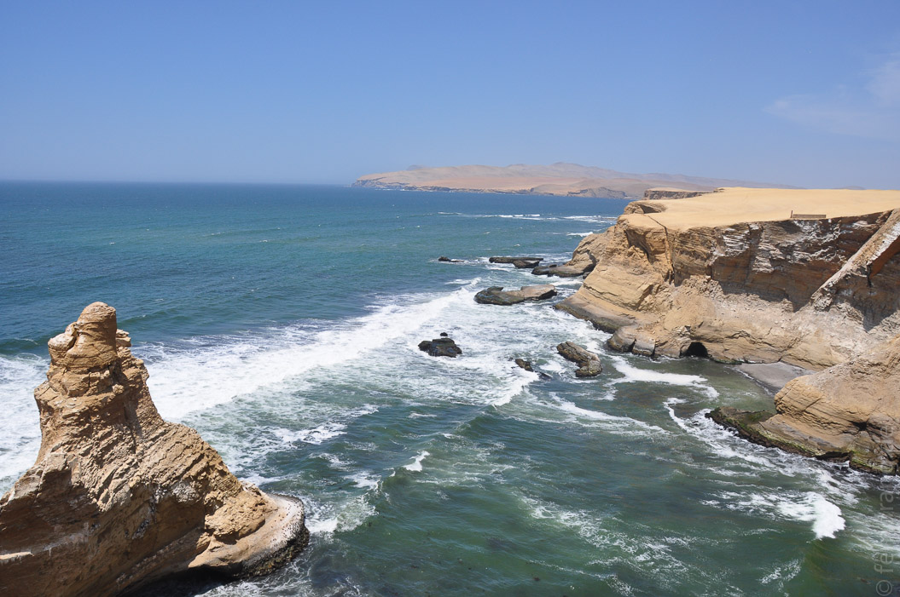
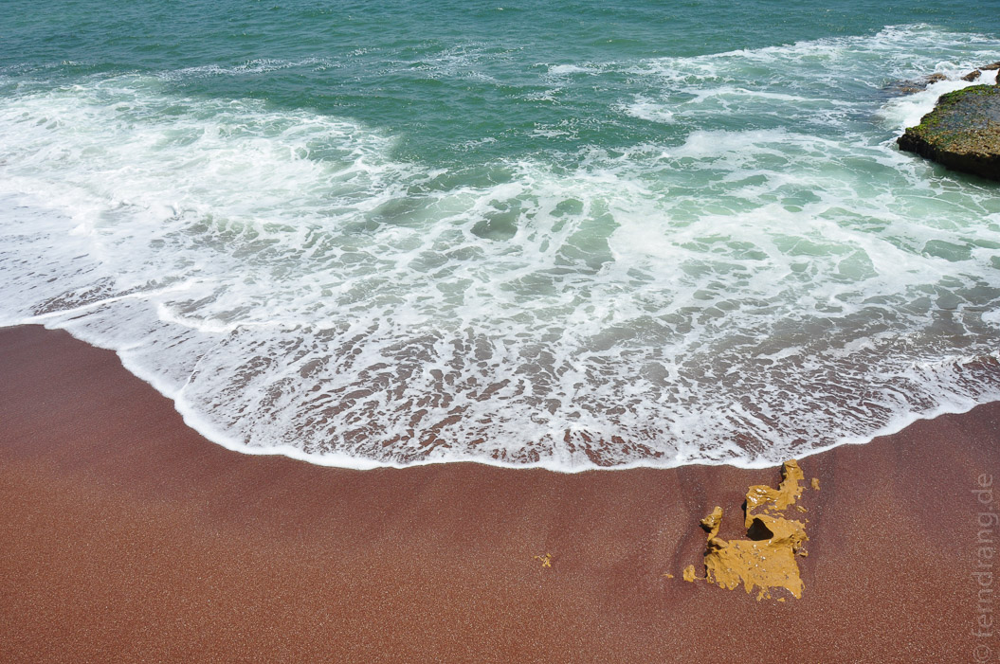

Am nächsten Morgen sind wir zu einem Ausflug zu den Islas Ballestas bei Paracas, ganz in der Nähe, aufgebrochen. Das "Galapagos fuer Arme" beherbergt Millionen Vögel, Pinguine und eine große Seelöwenkolonie. Die Vögel produzieren bergeweise Guano, das einem schon auf Entfernung den Atem verschlägt.
Auf den Inseln leben Unmengen an Pelikanen, die in majestätischen Geschwadern über uns her flogen. An den Ecken haben sich die Humboldt-Pinguine ihren Platz erobert. An den Stränden kämpfen die schreienden Seelöwen, sofern sie keinen ruhigeren Ort zum sonnen gefunden haben. Den meisten Platz aber brauchen die Kormorane, die so zahlreich auf hellgeschissenen Felsen sitzen, dass sie sie schwarz färben. Leider war die Umrundung der Inseln viel zu schnell vorbei.
Den Rest des Tages haben wir auf der Halbinsel Paracas verbracht. Hier gibt es absolut nichts. Der Ort ist relativ flach und erst vor Kurzem dem Dank Tektonik aufsteigendem Meeresboden entsprungen. Soweit das Auge reicht nur Sand. An den Rändern haben sich schöne Steilküsten gebildet. Die berühmte "Catedral", ein riesiger Steinbogen, der sich hier gebildet hat, ist leider auch dem Erdbeben zum Opfer gefallen; es steht nur noch ein Stumpf.
Auf dem Rückweg konnten wir erfahren, warum der Name auf Quechua "Sandsturm" heißt: Beim letzten Stopp wurden wir gesandstrahlt, bevor wir uns an den nicht allzu hübschen Strand gelegt und Einheimische beobachtet haben.









